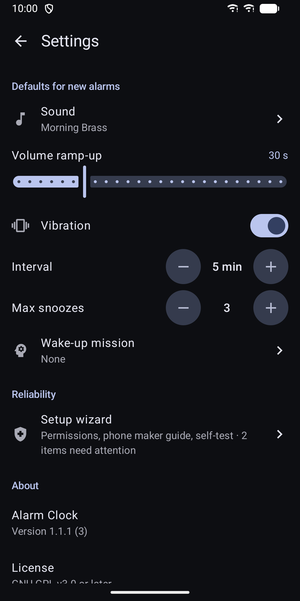

Wecker: Aufwach-Aufgaben
Zuverlässiger Wecker für Langschläfer. Löse eine Aufgabe zum Ausschalten.




Über die App
Wecker ist für Menschen gemacht, die normale Wecker verschlafen. Er klingelt auf die Minute genau, wird Schritt für Schritt lauter und verlangt eine kurze Aufgabe, bevor du ihn ausschalten kannst. WECKER - Beliebig viele Wecker, einmalig oder an gewählten Wochentagen - Jedem Wecker kannst du eine Bezeichnung geben - Nur das nächste Klingeln eines wiederholten Weckers überspringen - Wecker werden nach einem Neustart und nach einer Zeit- oder Zeitzonenänderung neu gestellt - Der Wecker nutzt die Weckerlautstärke und klingelt daher auch im Lautlos-Modus AUFWACH-AUFGABEN Wähle pro Wecker eine Aufgabe. Überspringen geht nicht. - Rechnen: drei Schwierigkeitsstufen, die Anzahl der Aufgaben legst du fest - Schütteln: Schüttle das Handy so oft, wie du einstellst - QR-Code oder Barcode: Scanne einen Code, den du dort angebracht hast, wohin du laufen musst, zum Beispiel im Bad - Schritte: Gehe die eingestellte Anzahl Schritte Schlägt eine Aufgabe dreimal fehl, bietet die App eine leichtere Rechenaufgabe an, damit du nie festhängst. Verlässt du die Aufgabe, klingelt der Wecker nach einer Minute erneut. SCHLUMMERN Schlummern ist auf dem Weckbildschirm immer möglich. Stelle das Intervall von 1 bis 30 Minuten und die maximale Anzahl von 0 bis 10 oder unbegrenzt ein. Sobald eine Aufgabe gestartet ist, kannst du nicht mehr schlummern. TON UND SIGNALE - Mitgelieferte Töne, System-Klingeltöne oder eigene Audiodatei - Wird deine Datei verschoben oder gelöscht, klingelt stattdessen ein mitgelieferter Ton, nie Stille - Die Lautstärke steigt über eine Zeit an, die du wählst - Vibration pro Wecker an oder aus - Optionales Blitzlicht-Stroboskop, standardmäßig aus, mit Warnung vor Lichtempfindlichkeit, bevor du es einschalten kannst ZUVERLÄSSIGKEIT Handys beenden Apps oft, um Akku zu sparen. Eine Einrichtungshilfe führt dich durch die Einstellungen für exakte Wecker, Benachrichtigungen, Vollbild und Akku. Dazu gibt es Anleitungen für Xiaomi, Samsung, Huawei, OnePlus, Oppo, Vivo und Realme sowie einen Selbsttest-Wecker, der eine Minute später klingelt. WEITERES - Widget mit dem nächsten Wecker und Countdown - Helles und dunkles Design nach Systemeinstellung - Für Handys und Tablets - Beschriftungen für Screenreader und große Touch-Flächen - Deutsch und Englisch DATENSCHUTZ Die App hat keine Internetberechtigung, kein Konto und keine Analyse. Deine Wecker bleiben auf deinem Handy. Die Kamera wird nur zum Scannen eines QR-Codes für die QR-Aufgabe genutzt. Die Aktivitätserkennung zählt nur Schritte für die Schritt-Aufgabe. Beides wird erst abgefragt, wenn du es brauchst. Alle Funktionen sind in der App enthalten. Es gibt keine In-App-Käufe. OPEN SOURCE Wecker ist Open Source unter der GNU GPL v3 oder neuer. Fragen oder Feedback: apps@schimpf.es